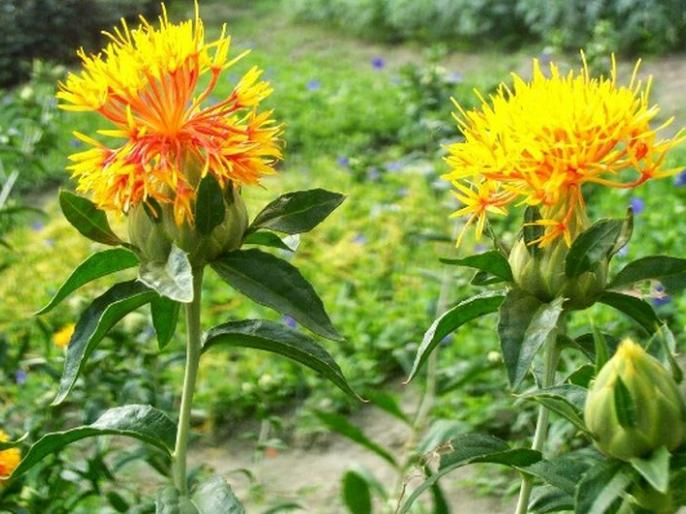

करडई विषयी माहिती

करडई -जमिन
करडईच्या पिकास मध्यम ते भारी (खोल) जमीन वापरावी. ४५ सेंटीमीटर पेक्षा जास्त खोल जमिनीत पीक चांगले येते.
त्याचप्रमाणे जमीन पाण्याचा चांगला निचरा होणारी असावी. पाणी साठवून राहिल्यास करडईच्या पिकास अपाय होतो. थोड्याफार
चोपण जमिनीतही हे पीक येवू शकते.
पूर्वमशागत
भारी जमिनीत तीन वर्षातून एकदा खोल नांगरट करावी व हेक्टरी ५ टन शेणखत (शेतक-याकडे उपलब्ध असल्यास ) टाकावे. दोन ते
तीन कुळबाच्या पाळ्य़ा (उभ्या आणि आडव्या) देवून जमीन भुसभूसीत करावी. पेरणीची वेळ
करडईची पेरणी योग्य वेळी करणे फार महत्वाचे आहे. लवकर पेरणी (सप्टेंबर पहिला पंधरवडा) केल्यास पिकाचे पानावरील ठिपके
या बुरशीजन्य रोगामुळे फार नुकसान होते आणि पर्यायाने उत्पादनात घट येते.
या उलट उशिरा पेरणी केल्यास (ऑक्टोंबर
दुसरा आठवड्यानंतर) पीक वाढीची अवस्था थंडीच्या काळात आल्यामुळे माव्याचा प्रादुर्भाव मोठ्या प्रमाणात होतो आणि
उत्पादनात घट येते.
त्यासाठी करडईची पेरणी सप्टेंबरच्या दुस-या पंधरवडा ते ऑक्टोंबरच्या पहिल्या आठवड्यापर्यत
करण्याची शिफारस करण्यात आलेली आहे. बागाईत करडईची पेरणी ऑक्टोंबर अखेरपर्यंत करावी.
पेरणीचे अंतर
कोरडवाहू क्षेत्रात दोन ओळीतील अंतर ४५ सें.मी आणि दोन रोपांतील अंतर २० सें.मी ठेवावे.
पेरणी पध्दत
करडई या तेलबिया पिकाची पेरणी दोन चाड्याच्या पाभरीने करावी.
बियाणे
प्रति हेक्टरी १० ते १२ किलो बियाणे पुरेसे होते.
बीजप्रक्रिया
थायरम किंवा कॅप्टन किंवा बाविस्टीन २.५ ग्रॅम प्रति किलो बियाण्यास चोळावे म्हणजे उगवणीनंतर करडईचे पीक बुरशीजन्य
रोगास बळी पडणार नाही तसेच अॅझोस्पीरीलम २५० ग्रॅम अधिक पी.एस.बी. २५० ग्रॅम प्रति १० ते १५ किलो बियाण्यास
वापरल्यास हवेतील नत्राचे स्थिरीकरण होऊन उत्पादकतेत वाढ होते.
आंतरपीक पध्दत.
सोलापूर येथील अखिल भारतीय तेलबिया करडई संशोधन प्रकल्पांतर्गत केलेल्या संशोधनावरुन हरभरा अधिक करडई (६:३) आणि जवस
अधिक करडई (४:२) या आंतरपीक पध्दती फायद्याच्या असल्याचे दिसून आले.
रासायनिक खत मात्रा
करडई हे पीक रासायनिक खतास चांगला प्रतिसाद देते. ५० किलो नत्र (११० किलो युरीया) आणि २५ किलो स्फुरद (१५६ किलो
सिंगल सुपर फॉस्फेट) प्रति हेक्टरी देणे आवश्यक आहे. ही खते पेरणीच्या वेळेस दोन चाड्याच्या पाभरीने पेरून द्यावीत.
बागायती करडई पिकास ६० किलो नत्र अधिक ३० किलो स्फुरद प्रति हेक्टरी द्यावे.
आंतरमशागत
उगवणीनंतर १० ते १२ दिवसांनी या पिकाची विरळणी करणे आवश्यक आहे. विरळणी करताना चांगली जोमदार रोपे ठेवावी. दोन
रोपांमधील अंतर २० सें.मी ठेवावे.
रब्बी हंगामात गरज असल्यास एखादी खुरपणी करावी. दोन ते तीन कोळप्याच्या पाळ्या
देणे अतिशय गरजेचे आहे. पहिली कोळपणी ३ –या आठवड्यात फटीच्या कोळप्याने, दुसरी कोळपणी ५ व्या आठवड्यात अखंड पासाच्या
कोळप्याने व तिसरी कोळपणी ८ व्या आठवड्यात दातेरी कोळप्याने करावी.
पाणी व्यवस्थापन
करडई हे पीक अवर्षण प्रतिकारक असल्यामुळे या पिकाच्या वाढीस पाणी कमी लागते. मध्यम ते भारी जमिनीत पुरेसा ओलावा
असल्यास करडईच्या पिकास पेरणी नंतर पाणी देण्याची गरज भासत नाही.
कालांतराने ओलावा कमी झाला आणि दुसरे पाणी पीक
फुलो-यात येताना ५५ ते ६० दिवसांनी द्यावे. पिकास पाण्याचा जास्त ताण पडू देऊ नये. तसेच भेगा पडल्यानंतर पाणी दिले
असता पाणी जास्त प्रमाणात जमिनीत मुरते.
जास्त पाण्यामुळे पीक मोठ्या प्रमाणात मर रोगास बळी पडते. म्हणून करडई पिकास
हलके पाणी द्यावे.
पीक संरक्षण
करडई पिकास मुख्यत: मावा या किडीचा प्रादुर्भाव दिसुन येतो करडईची पेरणी सप्टेंबरच्या दुस-या पंधरवड्यात केली असता
या किडीचा प्रादुर्भाव बराच कमी होतो. या किडीच्या नियंत्रणासाठी मावा दिसून आल्यानंतर डायमेथोएट (रोगर) ३० टक्के
प्रवाही ७२५ मि.ली. ५०० लिटर पाण्यात मिसळून प्रति हेक्टरी फवारणी करावी. सरकोस्पोरा व अल्टरनेरीया या बुरशीमुळे
होणा-या पानावरील ठिपक्यासाठी डायथेन एम-४५, १२५० ग्रॅम किंवा कॉपर ऑक्झीक्लोराईड १५०० ग्रॅम ५०० लिटर पाण्यात
मिसळून प्रति हेक्टरी फवारावे.
काढणी
साधारणपणे १३० ते १३५ दिवसात करडईचे पीक पक्व होते. पाने व बोंडे पिवळी पडतात. पिकाची काढणी सकाळी करावी. हवेत
आर्द्रता जास्त असल्याने दाणे गळत नाही व हाताला काटे टोचत नाही.
कापणीनंतर झाडांची कडपे रचून पेठे करावीत. ते पूर्ण
वाळल्यानंतर काठीने बडवून काढावे व नंतर उफणणी करुन बी स्वच्छ करावे.
काढणी गव्हाच्या एकत्रित काढणी व मळणी यंत्राने
काढणी अत्यंत कमी खर्चात आणि कमी वेळात करता येते व त्यापासून स्वच्छ माल मिळतो. करडई काढणीसाठी एकत्रित काढणी व
मळणी यंत्राचा प्राधान्याने वापर करुन खर्च व वेळ वाचवता येतो.
उत्पादन
मध्यम जमिनीत वरील सुत्रांचा अवलंब करुन लागवड केल्यास प्रति हेक्टरी १२ ते १४ क्विंटल आणि खोल जमिनीत १४ ते १६
क्विंटल उत्पादन मिळते. बागायती पिकापासून २० ते २५ क्विंटल प्रति हेक्टरी उत्पादन मिळते.
विशेष बाब
करडईच्या तेलात संपृक्त स्निग्ध आम्लाचे प्रमाण इतर तेलापेक्षा बरेच कमी असल्याने ह्रदय रोग्यांना हे तेल वापरणे
आरोग्याच्या दृष्टीने उपयुक्त असते. या तेलाच्या वापरामुळे रक्तातील कोलेस्टेरॉलची मात्रा प्रमाणाबाहेर वाढत नाही.
वैद्यक शास्त्रात औषधोपचार म्हणून करडईच्या पाकळ्यांचा उपयोग केला जातो.
मानवी शरीरातील रक्ताभिसरण्याच्या
कार्यक्षमतेवपर करडईच्या पाकळ्याचा इष्ट परिणाम होतो. रक्त वाहिन्यांमध्ये रक्त पुरवठा तसेच रक्तामध्ये प्राणवायू
मिसळण्याचे प्रमाण वाढून रक्त वाहिन्यात गुठळ्या होण्याचे प्रमाण कमी होते.
हदयरोग्यांच्या इलाजात करडईपाकळीयुक्त
औषधांच्या वापरामुळे रक्तालीत कोलेस्टेऱॉलचे प्रमाण कमी होते. मणक्याचे विकार, मानदुखी, पाठदुखी इत्यादींवर
आयुर्वेदीक उपचारात करडई पाकळ्या इतर औषधासोबत वापरल्यास आराम मिळतो. करडई पाकळ्यांचा दररोज काढा काढून पिल्यास वरील
रोगापासून ब-याच प्रमाणात फायदा होतो.
करडईची फुले उमलण्यास सुरुवात होताच सायकोसिल या वाढ प्रतिरोधकाची १०००
पी.पी.एम.तिव्रतेच्या (१००० मिली. ५०० लिटर पाण्यात) या द्रावणाची फवारणी केल्यास उत्पादनात १५ ते २० टक्के वाढ
झाल्याचे प्रयोगाअंती दिसून आलेले आहे.